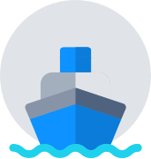

<!--
  Generated template for the Tracking page.

  See http://ionicframework.com/docs/v2/components/#navigation for more info on
  Ionic pages and navigation.
-->
<ion-header>
  <ion-toolbar>
  </ion-toolbar>

  <ion-toolbar class='tracking-header' color='plain'>
    <p class='tracking-header--title'>Vessel Tracker</p>
  </ion-toolbar>
</ion-header>

<ion-content class='main_content'>


  <div class="tracking_data">

    <div class="tracking_data--image">
      
    </div>

    <p class="tracking_data--header"> Track a vessel</p>
    <p class='tracking_data--subheader'>Please provide the vessel number below</p>
    <ion-input type="text" placeholder="Vessel No./ Bill Of Landing" class='tracking_data--input' (keydown.enter)='trackVesselTapped()' [(ngModel)]="vesselParams" ></ion-input>
    <button ion-button block class='finish_button' [disabled]=!input (click)="trackVesselTapped()" icon-end>
      Track Vessel
      <ion-icon name='search' class='finish_button--icon'></ion-icon>
    </button>

  </div>

</ion-content>
